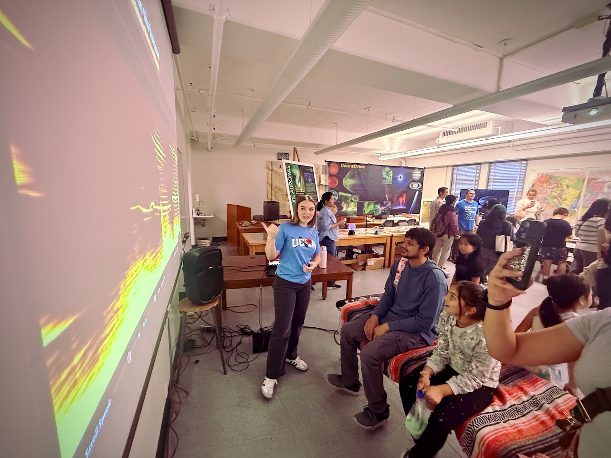

Sounds of NASA: Research Activated
Turning satellite data into sound. Turning musicians into scientists.
NASA satellites record the electromagnetic signatures of the sun, solar wind, and Earth's magnetosphere every second. SONARA transforms that data into sound, unlocking three powerful pathways: citizen science, creative collaboration, and immersive education.
A producer downloads a sample pack. Uses a coronal mass ejection as a kick drum.
"Wait, this sounds amazing! What is a coronal mass ejection?"
They discover heliophysics. They join a citizen science project. They contribute to a published paper.
Immersive audification-infused experiences inside planetarium domes and classrooms. Multi-channel spatial audio powered by OpenSpace software, where audiences don't just see the cosmos. They hear it.

Volunteers listen to audified NASA satellite data and identify wave features that matter to real heliophysics research. No prior expertise required. Just ears, curiosity, and a few minutes.
Through our study builder platform, researchers design listening experiments. Volunteers contribute classifications. The data feeds directly into peer-reviewed science.
Building creative instruments from NASA data
Web-based rhythmic pattern builder using audified heliophysics data as source material.
A wavetable synthesizer that loads audified satellite data as oscillator sources. Play the magnetosphere.
Sample packs curated by researchers. Annual remix competitions. A growing library of space-sound.
Research scientist leading the SONARA vision at LASP.
HARP PI. Space physicist driving the citizen science vision.
Space physics researcher connecting data to discovery.
Sonification pioneer. Built NASA CDAWeb's audification system. Ph.D. Design Science.
Engagement, assessment, and evaluation lead.
Expanding the reach of space science to new audiences.
SONARA hosts workshops at partner institutions and music community organizations, connecting artists directly with heliophysics scientists for mentorship and co-creation. Whether you're a musician, educator, researcher, or student — there's a place for you in this project.
In-person and virtual sessions at partner universities. Learn to build with NASA data, produce space-sound compositions, and develop signal processing skills alongside SONARA scientists.
Join an established international community of sonification researchers and practitioners. A recurring space where musicians, artists, students, and scientists explore new directions in heliophysics sonification.
Annual open competitions using NASA data sample packs. Produce original works, get featured in the online space-sound catalog, and contribute to real science outreach.
Interested in hosting a workshop, collaborating on a project, or joining the community?
Contact the Team